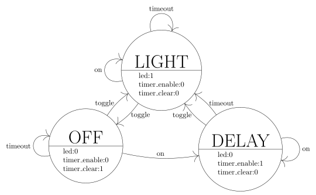
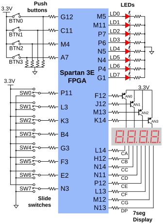
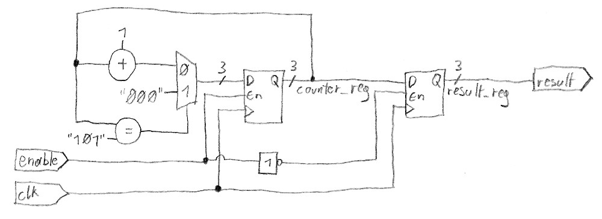

Semiversus | VHDL Test (2) | URL: ../../../dic/programmierbare_logik/test_vhdl/test2.html
- Digitale Systeme und Computersysteme
- Programmierbare Logik
- Test - VHDL
- VHDL Test (2)
Allgemeines
- Projektordner herunterladen und entpacken
- Insgesamt gibt es 29 Punkte
- Die einzelnen Punkte bauen meist nicht aufeinander auf. Statt langer Fehlersuche lieber auf das nächste Beispiel wechseln.
Einschaltverzögerung
Vorbereitung
- Projekt led_delay/led_delay.xise öffnen
Aufgabenstellung
Es ist eine einfache Einschaltverzögerung zu entwerfen. Diese Einschaltverzögerung steuert eine LED an und wird mittels zwei Tasten
bedient:
button_toggle - Schaltet das Licht ein bzw. ausbutton_on - Schaltet das Licht in 3 Sekunden ein
Entwurf der Zustandsmaschine
5 Punkte
Zur Realisierung wird eine Zustandsmaschine genutzt.
- Bearbeite die Datei led_delay_fsm.vhd
- Definiere die drei Zuständen
OFF, LIGHT und DELAY
- Der Startzustand ist
OFF
- Der Eingang
toggle_i wechselt von LIGHT nach OFF bzw. von OFF oder DELAY nach LIGHT
- Der Eingang
on_i wechselt von OFF nach DELAY, bei den anderen Zuständen hat er keine Auswirkung
- Der Eingang
timeout_i bewirkt ein Wechsel von DELAY nach LIGHT, bei den anderen Zuständen hat er keine Auswirkung
- Der Ausgang
led_o ist auf '1', wenn die Zustandmaschine im Zustand LIGHT ist
- Der Ausgang
timer_enable_o ist im Zustand DELAY auf '1', ansonsten '0'
- Der Ausgang
timer_clear_o ist im Zustand OFF auf '1', ansonsten '0'

Testbench
Teste die Implementierung mittels der Testbench led_delay_fsm_tb.vhd. Mittels F6 lässt sich
der gesamte Bereich zoomen.
Implementierung des Top Levels
5 Punkte
Zur Verfügung stehen die Komponenten counter, button_dectect und led_delay_fsm. Diese
Komponenten werden genutzt, um im Top Level led_delay.vhd die gewünschte Funktionalität zu realisieren.
- Die Instanz der Komponente button_detect mit dem Namen
toggle_detect_component ist bereits erstellt
button_i ist mit dem Eingang button_toggle_i verbundendetect_o ist mit dem (bereits definiertem) Signal toggle_detect verbunden
- Erstelle eine Instanz der Komponente button_detect mit dem Namen
on_detect_component analog zu toggle_detect_component
button_i ist mit dem Eingang button_on_i verbundendetect_o ist mit dem (bereits definiertem) Signal on_detect verbunden
- Erstelle eine Instanz der Komponente led_delay_fsm mit dem Namen
led_delay_fsm_component
toggle_i ist mit dem Signal toggle_detect verbundenon_i ist mit dem Signal on_detect verbundentimeout_i ist mit dem (bereits definiertem) Signal timeout verbundenled_o ist mit dem Ausgang led_o verbundentimer_enable_o ist mit dem (bereits definiertem) Signal timer_enable verbundentimer_clear_o ist mit dem (bereits definiertem) Signal timer_clear verbunden
- Erstelle eine Instanz der Komponente counter mit dem Namen
timeout_component
WIDTH in der generic map wird auf 28 gestellt (28 Bit)MAXIMUM wird auf CLK_TIMEOUT_DIVIDER gestellt (ist im generic Teil des Top Levels bereits definiert)enable_i ist mit dem Signal timer_enable verbundenreset_i ist mit dem Signal timer_clear verbundenvalue_o ist nicht verbunden (open)overflow_o ist mit dem Signal timeout verbunden
- Jede Komponente hat einen Takteingang
clk, welcher mit dem globalen clk verbunden wird
Testbench
Teste die Implementierung mittels der Testbench led_delay_tb.vhd.
Erweiterung der Constraints Datei
2 Punkte
In der Datei led_delay.ucf ist nur das Signal clk definiert. Erweitere die Datei um folgende Zuordnungen
button_toggle_i wird durch den Taster BTN0 angesteuertbutton_on_i wird durch den Taster BTN1 angesteuertled_o ist die LED LD0
Pinout des BASYS2 Boards(Bild: Digilent Inc. BASYS2 Manual)
Test am Board
1 Punkt
Synthetisiere das Projekt und teste das Ergebnis am Board
Würfel
Vorbereitung
- Projekt dice/dice.xise öffnen
Aufgabenstellung
Mittels sieben LEDs wird ein Würfel dargestellt. Eine Taste startet durch das Drücken einen Zufallsgenerator und beim
Loslassen wird das Ergebnis angezeigt. Dieser Zufallsgenerator ist ein Zähler, der mit 50Mhz die 6 möglichen Zustände
durchwechselt.
Decoder testen
5 Punkte
Der Decoder wandelt den Eingang value_i (3 Bit) in die entsprechende 7 LEDs Darstellung leds_o (7 Bit) um. Dabei
wird folgende kodierung verwendet:
| LED6 |
LED5 |
LED4 |
LED3 |
LED2 |
LED1 |
LED0 |
| Aus |
Aus |
Aus |
Ein |
Aus |
Aus |
Aus |
| Aus |
Aus |
Ein |
Aus |
Ein |
Aus |
Aus |
| Aus |
Ein |
Aus |
Ein |
Aus |
Ein |
Aus |
| Ein |
Aus |
Ein |
Aus |
Ein |
Aus |
Ein |
| Ein |
Ein |
Aus |
Ein |
Aus |
Ein |
Ein |
| Ein |
Ein |
Ein |
Aus |
Ein |
Ein |
Ein |
- Die erste Zeile entspricht der Darstellung bei
value_i gleich "000"
- Ein wird mittels
'1' kodiert, Aus mittels '0'
- Bei nicht definierten Zustände sollen alle LEDs aus sein
Die Komponente ist in vier Ausführungen (Architectures) bereits in der Datei decoder.vhd beschrieben. Die
Architectures lauten behave1, behave2, behave3 und behave4.
Erstelle in der Datei decoder_tb.vhd eine Testbench, die herausfindet, welche der vier Ausführungen
funktioniert (es ist genau eine).
Komponente shuffle
5 Punkte
Erstelle die Komponente shuffle durch Bearbeitung der Datei shuffle.vhd nach folgender Skizze:

- Wenn
enable_i auf '1' ist, soll der interne Zähler counter_reg bei einer steigenden Taktflanke hinaufzählen
- Der interne Zähler soll von 0 bis 5 zählen
- Das Register
result_reg übernimmt bei einer steigenden Taktflanke den Wert von counter_reg, wenn enable_i gleich '0' ist
Testbench
Teste die Implementierung mittels der Testbench shuffle_tb.vhd.
Implementierung des Top Levels
5 Punkte
Zur Verfügung stehen die Komponenten shuffle, decoder. Diese
Komponenten werden genutzt, um im Top Level dice.vhd die gewünschte Funktionalität zu realisieren.
Testbench
Teste die Implementierung mittels der Testbench dice_tb.vhd.
Test am Board
1 Punkt
Synthetisiere das Projekt und teste das Ergebnis am Board